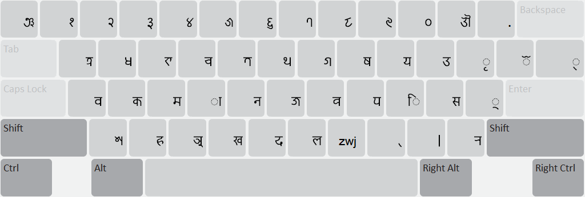
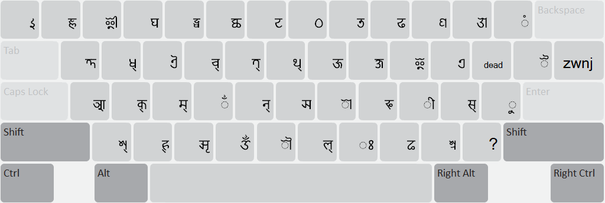

Start Using Newa Traditional
Traditional layout for Nepal Bhasa in Prachalit (newa) script for users familiar with Preeti like fonts.
For desktop
Normal State

Shift State

Use dead key { for special characters like ! , @ etc
{ ! = !
{ @ = @
Detailed instructions for similar layout for नेपाली
For mobile
While most of the layout remains the same as in desktop version, numerals have been moved to separate layer and some characters have been moved to longpress menu to account for limited screen estate. Wherever a long press menu is available, there is a small dot on right top of the key.
Notable longpresses
- 𑐷𑐂𑐃 are in 𑐶
- 𑐿𑐊𑐋 are in 𑐾
- 𑐹𑐄𑐅 are in 𑐸
- zwjzwnj are in 𑑂(top right key)
- non joining 𑐫𑑂 as in 𑐩𑐫𑑂𑐖𑐸 is in 𑐫
- 𑐲 is in 𑐳
- 𑐎𑑂𑐲 is in 𑐎
- 𑐖𑑂𑐘 is in 𑐖
For tablet
Similar to desktop layout for most part apart from some long press items. Symbols that required dead key combinations are now in symbols layer.